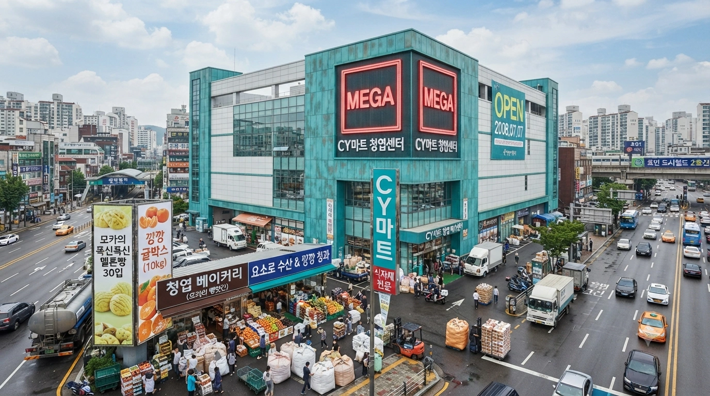
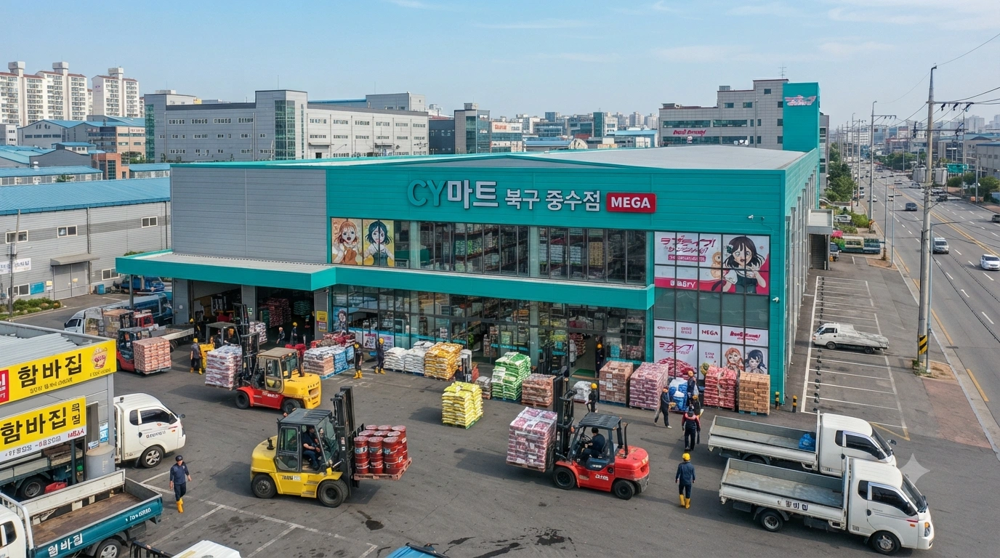
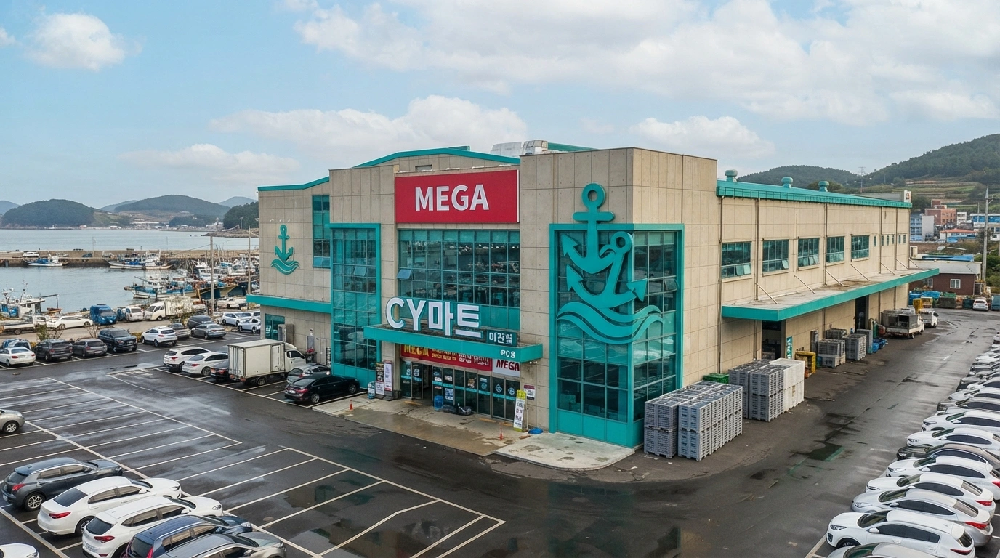

효빈광역시와 덕빈권 일대에서 주로 자영업자를 위한 식자재 전문 마트를 운영하는 유통업체. 일반 소비자를 겨냥한 빈스마트나 마루마트와는 달리, 대용량 통조림, 박스 단위 냉동식품, 말통 소스 등 업소용 식자재를 주력으로 취급하여 지역 내 동네 식당 사장님들에게는 없어서는 안 될 빛과 소금 같은 존재다. 다만, 효빈시에 2곳(청엽구, 북구), 덕빈남도에 1곳(마진시) 등 총 3곳의 대형마트(하이퍼마켓) 급 초대형 매장도 보유하고 있어 일반 소매 유통에서도 쏠쏠한 지분을 챙기고 있다.
본사인 (주)씨와이푸드망은 본래 오타쿠 마케팅에 크게 관심이 없는 평범한 유통업체였으나, 하필이면 본점이 효빈시 청엽구(靑葉區)에 위치하고 사명이 'CY'인 탓에, 효빈시 특유의 서브컬처 문화 속에서 두 거대 팬덤이 마트의 '근본'을 두고 치열한 내전을 벌이는 장이 되어버렸다.
뱅드림! 팬덤의 주장. 본점이 청엽구(靑葉區)에 위치해 있는데, 청엽(靑葉)을 일본어로 읽으면 아오바(Aoba)가 된다. 즉, 이곳은 아오바 모카의 성지라는 것. 실제로 CY마트 청엽 메가센터의 베이커리(빵) 코너는 모카 팬덤의 무력 시위(?)와 영혼 보내기로 인해 규모가 비정상적으로 크다. 마트 측에서도 빵 매출이 식자재 매출을 뚫어버리자 아예 빵 매대 위에 모카의 명대사인 "모캇테루네~" 팻말을 공식적으로 붙여버렸다.
러브 라이브! 선샤인!! 팬덤의 주장. 마트 이름인 CY는 다름 아닌 타카미 치카(Chika)와 와타나베 요우(You)의 앞 글자를 딴 완벽한 커플링 ChikaYou의 약자라는 억지(...) 주장이다. 이들은 주로 수산물 코너(요우)와 과일 코너(치카-귤)를 점거하고 있으며, 특히 겨울철 귤 상자가 들어올 때마다 "깡깡 귤!"을 외치며 식자재 마트의 산더미 같은 귤 상자를 궤짝 단위로 쓸어간다.
결과적으로 CY마트는 "빵 냄새를 풍기는 모카 팬덤"과 "귤을 까먹으며 요소로를 외치는 치카요우 팬덤"이 기묘하게 공존하는 환장의 마트가 되었다.
CY마트의 공식 테마 컬러는 탁한 청록색 (#00CCBB)이다. 원래 청엽구 본점을 세우면서 아오바 모카 파의 압력에 밀려 모카의 공식 퍼스널 컬러인 완벽한 청록색 (#00CCAA)을 시청에 상표 색상으로 신청했으나, 효빈시청 교통국으로부터 "해당 색상은 효빈 도시철도 2호선의 고유 노선색이므로 일개 상업 시설의 메인 컬러로 전면 사용 불가"라는 칼같은 반려 통보를 받았다. 시장이 씹덕이라 이런 데서 고증 검수가 드럽게 빡세다.
결국 마트 측은 눈물을 머금고 블루값을 살짝 섞은 탁한 청록색(#00CCBB)으로 타협을 봤다. 이를 두고 모카 팬들은 "모카 쨩의 색깔에 물을 타다니 이럴 순 없다"며 통탄했으나, 치카요우 팬덤은 "요우의 파란색(Blue)이 섞였으니 오히려 완벽한 치카요우 색상이다!"라며 기뻐했다는 후문이다.
효덕권 전체에 단 3곳만 존재하는 초대형 하이퍼마켓. 덕빈북도에는 1곳도 없다. 지못미 덕북. 각 매장은 엄청난 부지와 주차장, 그리고 살벌한 대용량 진열을 자랑한다.
| 지역 | 점포명 | 연락처 | 특징 및 비고 |
|---|---|---|---|
| 효빈 청엽구 | 청엽 메가센터 MEGA | 079-725-1100 |
 |
| 효빈 북구 | 북구 중수점 MEGA | 079-322-8822 |
 |
| 덕남 마진시 | 마진점 MEGA | 077-521-4040 |
 |
효덕권 각지에 40여 개 이상 산재한 식자재 마트들. 대형 프랜차이즈가 아닌 동네 밥집, 함바집 사장님들에게는 생명줄과도 같은 존재다.
※ 연락처는 효덕권 국번 부여 규칙을 철저히 준수하여 표기함.
| 권역 | 행정구역 | 점포명 | 연락처 | 특징 및 비고 |
|---|---|---|---|---|
| 효빈광역시 | 창전구 | 창전 식자재점 FOOD | 079-822-1212 | 터미널 인근 함바집 사장님들의 아지트. 20kg짜리 업소용 쌈장 통을 산더미처럼 쌓아놓고 판다. |
| 남구 | 평당 식자재점 FOOD | 079-421-9900 | 평당신도시 상가 식당들을 책임진다. 아침마다 식자재를 나르는 오토바이로 문전성시다. | |
| 북구 | 고송 식자재점 FOOD | 079-523-1004 | 고송 학원가 분식집 사장님들의 성지. 대용량 떡볶이 떡과 어묵 꼬치가 탑처럼 쌓여 있다. | |
| 서구 | 사복 식자재점 FOOD | 079-625-7700 | ||
| 안천구 | 창건 식자재점 FOOD | 079-921-3030 | ||
| 동구 | 사가당 식자재점 FOOD | 079-222-1111 | ||
| 중구 | 원동 식자재점 FOOD | 079-234-5555 | 원도심 노포 식당 할머니들이 카트를 끌고 장을 보러 오시는 곳. | |
| 덕빈북도 | 빈주시 | 빈성 식자재점 FOOD | 078-121-3344 | 구도심(빈성구)의 헛헛한 상권을 저렴한 식자재 가격 방어로 지탱해주고 있다. |
| 빈주시 | 장기 식자재점 FOOD | 078-132-8822 | ||
| 천주시 | 궁하 식자재점 FOOD | 078-223-4040 | ||
| 서해시 | 방부 식자재점 FOOD | 078-821-6000 | 항만 근로자 대상 함바집 사장님들이 물건을 쓸어가는 곳. 고기 원육을 박스째로 내놓는다. | |
| 약산시 | 장곡 식자재점 FOOD | 078-321-7000 | 모카 파의 영향인지, 빵 코너 대신 카페 사장님들을 위한 냉동 생지(반죽)를 대량으로 판다. | |
| 계성시 | 계성 식자재점 FOOD | 078-422-9900 | ||
| 강주시 | 갈원 식자재점 FOOD | 078-521-1234 | ||
| 덕빈남도 | 덕주시 | 조전 식자재점 FOOD | 077-124-7700 | 조전 신도시 프랜차이즈 가맹점주들이 아침 일찍 출근 도장을 찍는 아지트. |
| 덕주시 | 원명 식자재점 FOOD | 077-135-4422 | ||
| 방산시 | 주강 식자재점 FOOD | 077-221-5050 | ||
| 낙주시 | 길산 식자재점 FOOD | 077-721-3000 | 전라남도 식당 상인들까지 국도를 타고 넘어와서 식자재를 사가는 곳. | |
| 운진군 | 운진 식자재점 FOOD | 077-521-8800 | ||
| 비천시 | 고녕 식자재점 FOOD | 077-422-1122 | ||
| 석창군 | 오안 식자재점 FOOD | 077-233-5566 | ||
| 매산군 | 대현 식자재점 FOOD | 077-621-9988 |
CY마트는 타 마트와 궤를 달리하는 기상천외한 대용량 PB상품과 서브컬처 팬덤의 입김이 강하게 들어간 전용 매대를 운영한다. 자비 없는 양과 가성비 하나만큼은 효빈광역시 최고를 자부하며, 원가 절감을 위해 포장지 디자인 따위는 과감히 생략하고 무지 박스에 매직으로 글씨만 대충 써놓는 경우도 허다하다. 100줄 분량을 채워도 모자랄 만큼 종류가 방대하다.
CY마트의 공식 식자재 PB 라인업. 말 그대로 '대용량의 축복이 끝이 없네' 소리가 절로 나오는 무식한 크기와 깡패 같은 가성비를 자랑한다. 일반 소비자가 호기심에 샀다가는 유통기한 내에 절대 다 먹지 못하고 냉장고 공간만 낭비하게 되는 마법의 아이템들로 구성되어 있다.
아오바 모카 파의 영혼이 깃든 베이커리 특화 구역. 원래 식자재 마트 한구석에서 모닝빵 대용량 팩이나 팔던 볼품없는 곳이었으나, 모카 팬덤의 맹렬한 소비력과 조직적인 '빵 펀딩' 덕분에 이제는 웬만한 대형 프랜차이즈 빵집 규모를 아득히 뛰어넘어 매장 1층의 30%를 점유하고 있다. 가장 유명한 시그니처 메뉴는 '모카의 폭신폭신 멜론빵 30입 대용량 팩'으로, 주말 아침마다 이걸 사기 위한 오픈런이 벌어지며 대기 번호표까지 배부한다. 가끔 마트 제빵 직원들이 자발적으로 모카 코스프레를 하고 시식 행사를 진행하는데, 이때는 평소보다 빵 매출이 300% 이상 수직으로 상승하며 주변 도로에 극심한 교통체증이 유발된다. 최근에는 '업소용 5kg 냉동 생지' 라인업을 강화하여 동네 카페 사장님들까지 빵앗간의 노예로 만들고 있다.
CY(ChikaYou) 팬덤이 무력과 재력으로 완전히 장악해버린 수산물 및 과일 코너. 특히 찬바람이 부는 겨울철만 되면 '깡깡 귤 박스(10kg)'가 매장 입구부터 천장 근처까지 산처럼 쌓여 하나의 만리장성을 이룬다. 상자 디자인에 묘하게 주황색 머리 소녀의 실루엣이 그려져 있어 럽라 팬들의 굿즈 수집 욕구를 지독하게 자극하며, 다 먹고 남은 빈 귤 박스만 따로 중고거래 플랫폼에서 프리미엄이 붙어 거래되는 기행이 벌어진다. 수산물 코너는 매일 아침 "전속 전진! 요소로!"라는 기합 섞인 방송과 함께 신선한 고등어와 오징어가 매대에 쏟아지며, 내륙 도시인 효빈시의 지리적 한계를 뛰어넘어 항구도시 마진시 뺨치는 신선도를 자랑한다. 점장이 주말마다 직접 배를 몰고 남해 바다로 나가서 참치를 잡아 온다는 개소리 헛소문 전설이 돌 정도로 수산물 품질이 압도적이라, 초밥집 사장님들의 발길이 새벽부터 끊이지 않는다.
워낙 거대한 대용량과 그날그날의 생존을 위해 싸우는 거친 자영업자들을 상대하는 야생의 마트이다 보니, 효빈광역시의 내로라하는 진상 빌런들도 이곳에서는 명함도 못 내밀고 압도적인 물리력과 덕력에 짓눌려 참교육을 당하기 일쑤다.
효빈위키 공인 동네 북이자 망언 제조기인 빌런 정철규(1957년생)가 어느 날 청엽 메가센터 계산대에 나타났다. 전직 경찰이자 선거 낙선인 출신인 그는 과거 자신의 얄팍한 정치인 경력을 들먹이며 카트에 5kg짜리 냉동 삼겹살 블록을 던지듯 올려놓았다.
그러고는 "내가 어? 예전에 서구 당협위원장도 하고 경찰 간부 출신인데! 1인 가구 인권 보장 차원에서 이 고기를 딱 300g만 썰어서 90% 할인가에 내놔라!"라며 말도 안 되는 억지를 부렸다.
계산대 알바생이 당황하며 "고객님, 저희는 업소용 식자재 마트라 소분 판매나 특혜 할인이 불가능합니다."라고 매뉴얼대로 응대했음에도, 정철규는 고래고래 소리를 지르며 "너 내가 누군지 아냐! 소비자 보호원에 고발하겠다!"며 진상을 부렸다.
그러나 하필 그 시간은 주말 한정판 멜론빵을 싹쓸이하러 온 아오바 모카 팬덤 30여 명과, 귤을 박스째 들고 가던 치카요우 팬덤 연합군이 계산을 위해 줄을 길게 늘어서 있던 타이밍이었다. 빵이 식을까 봐 초조해하던 모카 팬들은 꼰대 정치인의 진상 짓으로 계산이 지연되자 분노를 금치 못했고, 럽라 팬들은 "어디서 낙선한 양반이 여기서 유세야! 요소로!" 구호를 외치며 그를 에워쌌다.
결국 양대 팬덤이 뿜어내는 살벌한 덕력과 덩치 큰 식당 사장님들의 따가운 눈초리에 기세가 완전히 눌린 정철규는, 도망치려다 진열되어 있던 'CY 3kg 업소용 쌈장' 탑을 건드려 무너뜨렸고, 터진 쌈장을 온몸에 뒤집어쓴 채 주차장으로 비참하게 줄행랑을 쳤다. 이후 그는 청엽 메가센터 출입 금지 블랙리스트 1호에 당당히 이름을 올렸다.
자칭 '계엄사령관'이자 혐오 빌런으로 악명 높은 낙선자 윤재훈(1996년생)이 치카요우 팬덤의 성지인 '깡깡 청과' 코너에 난입하여 벌인 정신 나간 무단 점거 사건.
그는 자신의 팔에 조잡하게 만든 완장을 차고 확성기를 든 채 나타나, 산처럼 쌓인 10kg 귤 박스 탑 위에 올라가 "지금부터 이 마트의 귤은 모두 계엄군이 압수한다! 좌편향된 씹덕 세력들이 대한민국의 비타민C를 독점하는 것을 좌시할 수 없다!"라는 기적의 논리를 펼치며 귤 코너에 임의 계엄령을 선포했다.
어처구니없는 상황에 장을 보던 일반 시민들과 자영업자들은 벙쪘고, 귤 서리를 준비하던 치카요우 팬덤은 자신들의 성지가 오염되는 것에 극대노했다. 윤재훈은 카트를 바리케이드 삼아 진을 치고는 다가오는 알바생들에게 "접근하면 반국가 세력으로 간주해 체포하겠다"고 헛소리를 늘어놓았다.
이 난장판은 결국 마트 보안팀이 출동하기도 전에, 귤을 사기 위해 아침부터 대기 타고 있던 수십 명의 치카 팬들이 "우리 귤에 무슨 짓이야!"라며 카트 바리케이드를 맨몸으로 밀어버리면서 끝이 났다. 귤더미에서 굴러떨어진 윤재훈은 팬덤에게 둘러싸여 강제 사과문을 낭독한 뒤, 귤 찌그러진 값 3만 원을 배상하고 쫓겨나는 굴욕을 맛봤다.
위의 귤 코너 무단 점거 사태 직후 벌어진 전설적인 진압 작전. 쫓겨났던 윤재훈이 분을 삭이지 못하고 이번엔 수산물 코너 쪽으로 우회하여 또다시 "계엄령!"을 외치며 행패를 부리려 시도했다.
그러나 때마침 호텔관광경영학 전공의 여대생이자, 원작의 치카 포지션을 담당하고 있는 불도저 성격의 고해영(2003년생)이 해산물 장을 보러 수산 코너를 걷고 있었다. 윤재훈이 생선 매대 위로 올라가려는 것을 목격한 고해영은 단 1초의 망설임도 없이 카트에 실려 있던 10kg짜리 깡깡 귤 박스를 어깨 위로 둘러멨다.
해영은 "전속 전진! 요소로 귤 펀치!!"라는 우렁찬 기합과 함께 도움닫기를 하여 윤재훈의 옹졸한 등짝을 향해 10kg 귤 박스를 풀스윙으로 내리꽂았다.
매장 전체에 '빠아아악!' 하는 뼈가 울리는 타격음이 퍼졌고, 엄청난 중력 가속도와 물리력을 버티지 못한 자칭 계엄사령관 윤재훈은 "컥!" 소리와 함께 수조 앞 바닥에 개구리처럼 뻗어버렸다. 물리 대미지 9999, 계엄령 강제 해제 성공.
상황이 종료되자 해영은 쿨하게 찌그러진 귤 박스의 먼지를 털고 계산대로 향했고, 매장에 있던 시민들은 기립 박수를 쳤다. 이 사건으로 고해영은 CY마트 점장으로부터 '명예 수호자 평생 VIP 할인' 혜택을 하사받았다.
낙선 정치인 정철규가 지방선거 기간에 인지도를 높이겠다며, CY마트 청엽 메가센터 내에서도 유동 인구가 가장 많은 '청엽 베이커리' 코너에 무단으로 선거원들을 대동하고 난입한 엽기적인 사건.
그는 메가폰을 들고 "청년들이 빵이나 씹어먹으면서 일본 캐릭터나 빨고 있으니 나라가 이 모양이다! 이 불건전한 멜론빵들은 선거법 위반 물품으로 간주하고 전량 압수 조치하겠다!"라며 또다시 망언을 쏟아냈다. 그러고는 갓 구워져 나온 30입 한정판 멜론빵 매대에 손을 뻗었다.
그 순간, 빵을 사기 위해 새벽 5시부터 번호표를 뽑고 대기 중이던 100여 명의 아오바 모카 팬덤의 눈이 뒤집혔다. "감히 모카 쨩의 빵을 모독해?!"라는 함성과 함께 분노한 팬덤이 좀비 떼처럼 정철규 일행을 에워쌌다.
압도적인 인원수와 살기에 지린 정철규의 선거원들은 명함을 집어 던지고 도망갔고, 홀로 남겨진 정철규는 팬들이 던지는 굳어버린 모닝빵 쪼가리와 바게트를 방패로 막으며 뒷걸음질 치다 제빵실 밀가루 포대에 걸려 넘어졌다. 머리부터 발끝까지 밀가루를 뒤집어쓴 그는 하얀 유령 꼴이 되어 마트 밖으로 쫓겨났고, 이 꼴불견 영상은 유튜브에 박제되어 조회수 100만을 넘겼다.
혐오 빌런 윤재훈이 이번에는 럽라 팬들의 성지인 수산물 코너에 나타나 스마트폰으로 라이브 방송을 켜고 어그로를 끌기 시작했다. 그는 마진항에서 갓 잡아 온 싱싱한 오징어와 고등어를 가리키며 "이거 다 방사능 묻은 일본산 수산물이다! CY마트가 국민들에게 독을 먹이고 있다!"라며 근거 없는 가짜뉴스와 혐오 발언을 남발했다.
하지만 그가 건드린 곳은 바다와 수산물을 신성시하는 와타나베 요우 팬덤의 본진이었다. 방송을 본 팬들이 실시간으로 코너로 집결하기 시작했고, 마진항 수산시장 출신의 건장한 납품업자 사장님들까지 합세했다.
한 덩치 하는 수산업자 아저씨가 "야 이 자식아, 내가 오늘 새벽 3시에 덕남 앞바다에서 직접 그물로 건져 올린 건데 무슨 개소리야!"라며 펄떡이는 팔뚝만 한 방어를 들어 올려 윤재훈의 뺨을 후려칠 뻔한 기세를 보였다.
요우 팬덤은 윤재훈을 빙 둘러싸고 "요소로!"를 100번 복창하게 하는 정신 교육을 시전했고, 윤재훈은 비린내가 진동하는 수산물 매대 구석에서 바들바들 떨다가 스스로 방송을 종료하고 도망가야만 했다.
각자 CY마트에서 굴욕을 맛본 정철규와 윤재훈이 앙심을 품고 일시적인 '빌런 연합'을 결성하여 북구 중수점 식자재 마트(FOOD)의 영업을 방해하려던 희대의 촌극. 그들은 마트가 가장 붐비는 오픈 시간인 아침 6시에 맞춰 정문 입구에 드러눕고 바리케이드를 치며 영업방해 시위를 벌였다.
그러나 그들이 치명적으로 간과한 사실은, 아침 6시의 중수점은 공단 함바집 사장님들이 초특가 식자재를 선점하기 위해 평판 카트를 끌고 시속 20km로 F1 레이싱을 벌이는 무법지대라는 것이었다.
문을 열자마자 밀려드는 사장님들의 대형 카트 군단은 바리케이드 따위는 안중에도 없었다. "아씨, 오늘 특가 돼지고기 다 털리기 전에 비켜!!"라는 사자후와 함께 수십 대의 카트와 짐수레가 정철규와 윤재훈을 말 그대로 '밀고 지나갔다'.
시위 피켓은 300kg짜리 쌀포대를 실은 카트 바퀴에 처참히 박살 났고, 바리케이드는 지게차 포크에 밀려 쓰레기장으로 직행했다. 두 빌런은 바닥을 구르며 살려달라고 애원했고, 결국 이 사건 이후 그들은 다신 CY마트 반경 1km 이내에 접근조차 하지 못하는 PTSD(외상후스트레스장애)를 겪게 되었다고 전해진다.